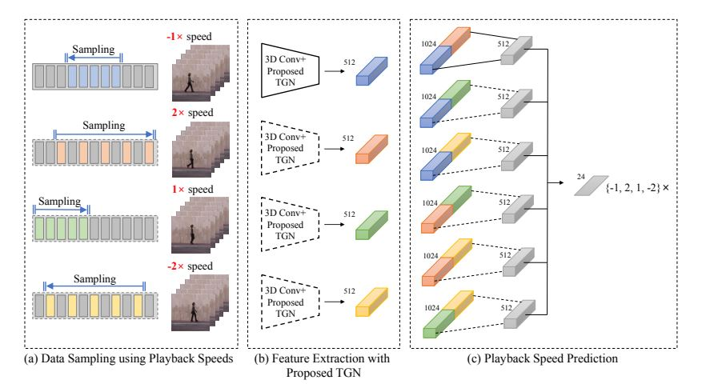

This has two branch,
generative and discriminative. Discriminative focuses on
the classifying the clip’s sampling rate, whereas, generative reconstructs the missing frame due to dilated sampling.
Thus, the first one concentrates on temporal aspect and second one on spatial aspec
More details can be found
here.

The overall framework of the proposed method. (a) Data sampling using playback speeds. We sample frames
according to the different playback speeds from the random initial points to form a clip and randomly shuffle them for 3D
ConvNet. (b) Feature extraction with layer-dependable TGN. For efficient video learning, we train a 3D ConvNet using the
proposed TGN instead of batch normalization. (c) Playback speed prediction. The extracted features are concatenated pairwise.
The fully connected layers are used to encode the features, and the final layer uses these features to predict the playback speeds
of the input clips. The dashed lines indicate that the network weights are shared with the straight lines.